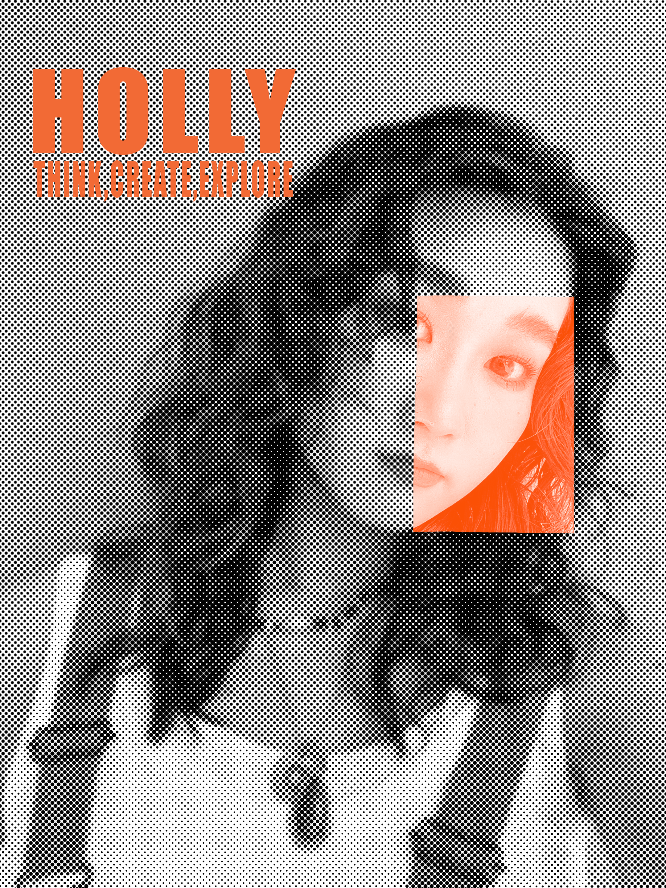
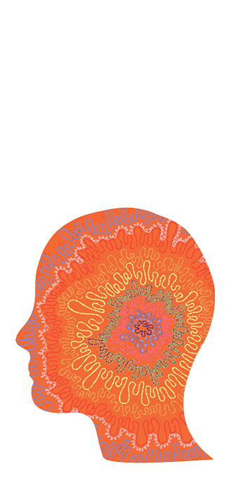

GRAPHIC/WEB/ART
1994年生まれ。東京都出身。
日常の中で感じることや、何気ない瞬間から生まれる感覚を大切にしています。
これまでアパレル業界で、店舗ディスプレイやブランドの世界観づくり、
情報発信に携わってきました。
さまざまなものに触れ、心惹かれるものを見つけたり、
異なるアイデアを組み合わせたりすることに面白さを感じます。
直感やひらめきを大切に、試行錯誤を重ねながら、
一つひとつのアイデアを自分なりの表現へと形にしていく。
自分の感性を大切にしながらも、相手の想いや目的に寄り添い、
見る人の心に残るデザインを目指しています。

01 DESIGN
Poster/Logo/Branding/Banner
Website/LP/UI/Wireframe
Illustration/Art/Visual Expression
02 TOOLS
SOFTWARE & DEVELOPMENT
03 MY APPROACH
本質を捉え、アイデアを広げる
感覚を視覚的な表現に変える

全体の世界観を組み立てる
固定観念にとらわれず考える